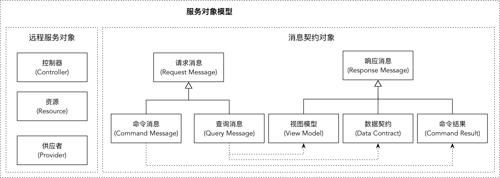
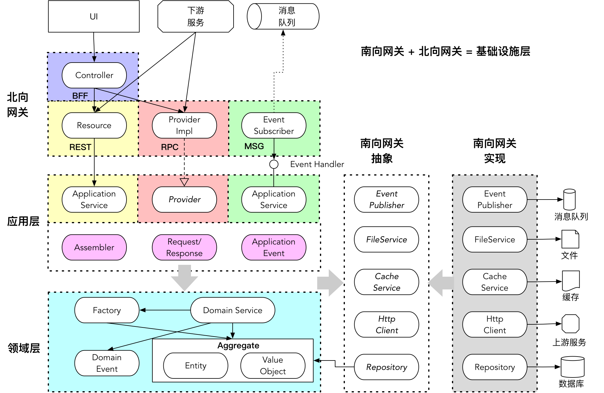

- 001 「战略篇」访谈 DDD 和微服务是什么关系？.md.html
- 002 「战略篇」开篇词：领域驱动设计，重焕青春的设计经典.md.html
- 003 领域驱动设计概览.md.html
- 004 深入分析软件的复杂度.md.html
- 005 控制软件复杂度的原则.md.html
- 006 领域驱动设计对软件复杂度的应对（上）.md.html
- 007 领域驱动设计对软件复杂度的应对（下）.md.html
- 008 软件开发团队的沟通与协作.md.html
- 009 运用领域场景分析提炼领域知识（上）.md.html
- 010 运用领域场景分析提炼领域知识（下）.md.html
- 011 建立统一语言.md.html
- 012 理解限界上下文.md.html
- 013 限界上下文的控制力（上）.md.html
- 014 限界上下文的控制力（下）.md.html
- 015 识别限界上下文（上）.md.html
- 016 识别限界上下文（下）.md.html
- 017 理解上下文映射.md.html
- 018 上下文映射的团队协作模式.md.html
- 019 上下文映射的通信集成模式.md.html
- 020 辨别限界上下文的协作关系（上）.md.html
- 021 辨别限界上下文的协作关系（下）.md.html
- 022 认识分层架构.md.html
- 023 分层架构的演化.md.html
- 024 领域驱动架构的演进.md.html
- 025 案例 层次的职责与协作关系（图文篇）.md.html
- 026 限界上下文与架构.md.html
- 027 限界上下文对架构的影响.md.html
- 028 领域驱动设计的代码模型.md.html
- 029 代码模型的架构决策.md.html
- 030 实践 先启阶段的需求分析.md.html
- 031 实践 先启阶段的领域场景分析（上）.md.html
- 032 实践 先启阶段的领域场景分析（下）.md.html
- 033 实践 识别限界上下文.md.html
- 034 实践 确定限界上下文的协作关系.md.html
- 035 实践 EAS 的整体架构.md.html
- 036 「战术篇」访谈：DDD 能帮开发团队提高设计水平吗？.md.html
- 037 「战术篇」开篇词：领域驱动设计的不确定性.md.html
- 038 什么是模型.md.html
- 039 数据分析模型.md.html
- 040 数据设计模型.md.html
- 041 数据模型与对象模型.md.html
- 042 数据实现模型.md.html
- 043 案例 培训管理系统.md.html
- 044 服务资源模型.md.html
- 045 服务行为模型.md.html
- 046 服务设计模型.md.html
- 047 领域模型驱动设计.md.html
- 048 领域实现模型.md.html
- 049 理解领域模型.md.html
- 050 领域模型与结构范式.md.html
- 051 领域模型与对象范式（上）.md.html
- 052 领域模型与对象范式（中）.md.html
- 053 领域模型与对象范式（下）.md.html
- 054 领域模型与函数范式.md.html
- 055 领域驱动分层架构与对象模型.md.html
- 056 统一语言与领域分析模型.md.html
- 057 精炼领域分析模型.md.html
- 058 彩色 UML 与彩色建模.md.html
- 059 四色建模法.md.html
- 060 案例 订单核心流程的四色建模.md.html
- 061 事件风暴与业务全景探索.md.html
- 062 事件风暴与领域分析建模.md.html
- 063 案例 订单核心流程的事件风暴.md.html
- 064 表达领域设计模型.md.html
- 065 实体.md.html
- 066 值对象.md.html
- 067 对象图与聚合.md.html
- 068 聚合设计原则.md.html
- 069 聚合之间的关系.md.html
- 070 聚合的设计过程.md.html
- 071 案例 培训领域模型的聚合设计.md.html
- 072 领域模型对象的生命周期-工厂.md.html
- 073 领域模型对象的生命周期-资源库.md.html
- 074 领域服务.md.html
- 075 案例 领域设计模型的价值.md.html
- 076 应用服务.md.html
- 077 场景的设计驱动力.md.html
- 078 案例 薪资管理系统的场景驱动设计.md.html
- 079 场景驱动设计与 DCI 模式.md.html
- 080 领域事件.md.html
- 081 发布者—订阅者模式.md.html
- 082 事件溯源模式.md.html
- 083 测试优先的领域实现建模.md.html
- 084 深入理解简单设计.md.html
- 085 案例 薪资管理系统的测试驱动开发（上）.md.html
- 086 案例 薪资管理系统的测试驱动开发（下）.md.html
- 087 对象关系映射（上）.md.html
- 088 对象关系映射（下）.md.html
- 089 领域模型与数据模型.md.html
- 090 领域驱动设计对持久化的影响.md.html
- 091 领域驱动设计体系.md.html
- 092 子领域与限界上下文.md.html
- 093 限界上下文的边界与协作.md.html
- 094 限界上下文之间的分布式通信.md.html
- 095 命令查询职责分离.md.html
- 096 分布式柔性事务.md.html
- 097 设计概念的统一语言.md.html
- 098 模型对象.md.html
- 099 领域驱动设计参考过程模型.md.html
- 100 领域驱动设计的精髓.md.html
- 101 实践 员工上下文的领域建模.md.html
- 102 实践 考勤上下文的领域建模.md.html
- 103 实践 项目上下文的领域建模.md.html
- 104 实践 培训上下文的业务需求.md.html
- 105 实践 培训上下文的领域分析建模.md.html
- 106 实践 培训上下文的领域设计建模.md.html
- 107 实践 培训上下文的领域实现建模.md.html
- 108 实践 EAS 系统的代码模型.md.html
- 109 后记：如何学习领域驱动设计.md.html
- 捐赠
098 模型对象
正如我在 1-1 课《什么是模型》中所说，不同的建模视角会产生不同的模型，但这并不意味着选择一种建模视角就仅仅会产生一种模型，而是指建模的过程围绕着什么样的模型为核心。领域模型驱动设计自然以领域模型为核心，但在限界上下文内部，分层架构的不同层次仍然可能由不同的模型对象组成。除了领域层包含了领域模型，在基础设施层中，面向数据库的是否需要单独建立数据模型，面向外部调用者的远程服务是否需要建立服务模型呢？
领域模型与持久化
一个业务系统之所以引入数据库，并非领域逻辑所需，而是因为运行在内存中的软件系统无法满足数据持久存储的需求，由此引入了持久化对象（PO）。持久化机制并不仅限于数据库，例如将对象的值持久化到文件也是一种可行的选择。因此，我们不可将持久化对象与数据模型对象等而视之。数据模型对象是对数据表以及关系的抽象，倘若采用领域驱动设计，需要避免这种建模方法。建立数据模型与领域驱动设计的核心思想背道而驰。领域模型驱动设计只应该通过分析领域逻辑建立领域模型对象，不会驱动出数据模型对象！
领域模型对象包括实体、值对象、领域服务和领域事件。其中，只有实体和值对象拥有状态，并由资源库管理它们的生命周期。在领域层，实体和值对象的生命周期无非就是创建、添加、更改和移除，它们持有的状态数据最终还需要持久化到数据库中，这是由技术因素决定的，因此具体的持久化实现应属于基础设施层。资源库的实现类在执行持久化时，操作的对象虽然是领域模型对象，但在持久化场景中，这些领域模型对象的身份也发生了变化，持久化操作并不关心它们提供的领域逻辑和领域行为，而仅仅关心数据值、数据关系以及该如何映射到数据表完成持久化。因此，资源库的实现所操作的领域模型对象就是持久化对象。在建立领域模型对象之后，我们不需要为持久化建立专门的数据模型对象。
如果一个对象持有的状态值不需要持久化到数据库，而是临时寄存在内存空间中，这样的对象可以称之为“瞬时对象（Transient Object）”。如果该瞬时对象表达了一个领域概念，封装了领域逻辑，它就属于领域模型的一部分。瞬时对象既有数据属性，又有领域行为，可以定义为实体和值对象，但由于它不需要资源库管理生命周期，因此不需要放到聚合边界之内。
什么时候需要定义这样的瞬时对象呢？我们先看一个例子。在库存上下文中，需要定义检查库存量的领域行为。这一检查行为是针对订单进行的，定义在库存上下文的领域服务中：
package com.ecommerce.inventorycontext.domain.inventory;
public class InventoryService {
private InventoryRepository inventoryRepository;
public List<AvailableInventory> checkAvailability(Order order) {
List<AvailableInventory> inventories = new ArrayList<>();
for (OrderItem orderItem : order.items()) {
Quantity quantity = inventoryRepository.countBy(orderItem.sku());
inventories.add(AvailableInventory.of(orderItem.sku(), quantity, orderItem.isAvailable(quantity)));
}
return inventories;
}
}
package com.ecommerce.inventorycontext.domain.inventory;
public class Order {
private String orderId;
private List<OrderItem> orderItems;
public Order(String orderId, List<OrderItem> orderItems) {
this.orderId = orderId;
if (orderItems == null) {
this.orderItems = new ArrayList<>();
} else {
this.orderItems = orderItems;
}
}
public String orderId() {
return this.orderId;
}
public List<OrderItem> items() {
return this.orderItems;
}
}
package com.ecommerce.inventorycontext.domain.inventory;
public class OrderItem {
private String sku;
private Quantity purchasedQuantity;
public OrderItem(String sku, Quantity quantity) {
this.sku = sku;
this.purchasedQuantity= quantity;
}
public String sku() {
return this.sku;
}
public boolean isAvailable(Quantity availableQuantity) {
return purchasedQuantity.lessThan(availableQuantity);
}
}
package com.ecommerce.inventorycontext.domain.inventory;
public class AvailableInventory {
private String sku;
private Quantity availableQuantity;
private boolean isAvailable;
private AvailableInventory(String sku, Quantity quantity, boolean isAvailable) {
this.sku = sku;
this.availableQuantity = quantity;
this.isAvailable = isAvailable;
}
public static AvailableInventory of(String sku, Quantity availableQuantity, boolean isAvailable) {
return new AvailableInventory(sku, availableQuantity, isAvailable);
}
}
Order 类定义在库存上下文，但它拥有的数据值皆来自订单上下文，在库存上下文中并不需要持久化这些数据，因此它是一个瞬时对象。同样，AvailableInventory 也是瞬时对象，它的目的是封装库存检查的结果。类似这样的瞬时对象表达了领域概念，也封装了与之相关的领域逻辑，因此它们也是领域模型对象。Order 有身份标识 ID，是一个实体，AvailableInventory 没有身份标识，是一个值对象。
如果和应用服务结合起来，你会发现诸如 Order 与 AvailableInventory 这样的瞬时领域对象往往存在与消息契约对象的转换关系。如库存应用服务：
package com.ecommerce.inventorycontext.application;
public class InventoryAppService {
public InventoryResponse checkInventory(CheckingInventoryRequest inventoryRequest) {}
}
通过 CheckInventoryRequest 消息请求对象，可以将其转换为库存上下文的 Order 对象；而返回的 InventoryResponse 消息响应对象则由 AvailableInventory 领域模型对象转换而来。此外，库存上下文的 Order 对象还映射了订单上下文的 Order 模型对象，它的持久化发生在订单上下文，对于库存上下文而言，Order 对象不过是一个读模型而已，无需资源库对其进行持久化。
遵循了面向对象的设计思想，也需要引入瞬时领域模型对象来封装领域逻辑，实现对象与对象之间的行为协作。例如，在薪资管理系统中，计算员工薪资需要根据结算周期进行计算，定义 Period 类是为了满足对象之间的行为协作，它作为 payroll() 方法的输入参数，是不需要持久化的。但谁能说它不是一个领域模型对象呢？类似这样的对象都是视需要而被临时创建，通常并不需要身份标识去跟踪和管理它的生命周期，故而可以定义为值对象。
由于瞬时对象无需资源库管理生命周期，这些对象在领域设计模型中比较特殊，无需聚合来维持它们的概念完整性和数据一致性。除此之外，持久化的领域模型对象持有的部分字段也有可能不需要持久化，这样的字段可称为“瞬时字段（Transient Field）”。
服务模型与持久化
与数据模型对象不同，服务模型对象则是必须的，因为远程服务和应用服务皆服务于限界上下文的外部调用者。服务模型的构成如我在 1-18 课《领域驱动分层架构与对象模型》的介绍，如下图所示：

消息契约对象携带了数据，但它们无需持久化，属于瞬时对象。如果服务的调用请求来自于下游限界上下文，则由下游的限界上下文将自己的领域模型对象转换为与上游服务接口对应的请求消息对象。当前限界上下文在接收到服务请求后，由应用服务调用请求消息对象或装配器的转换方法将其转换为当前上下文的领域模型对象。如果该领域模型对象映射自下游限界上下文，往往就是一个瞬时的领域模型对象，如检查库存例子中所示的 Order 对象。返回的结果也是一个瞬时的领域模型对象，如 AvailabilityInventory，将其转换为响应消息对象后返回给下游限界上下文。同理，下游限界上下文在获得该服务的响应后，倘若需要调用本上下文的领域服务，又需要将返回的响应消息对象转换为自己的领域模型对象。这个领域模型对象有可能也是瞬时的。
视图模型对象与之类似，当它仅仅作为 MVC 模式中的 Model 对象时，持有的数据会作为视图呈现的内容，数据值则来自当前限界上下文的领域模型对象，应用服务会承担它们之间的转换工作。如果视图模型对象还要支持前端 UI 的可配置，就需要后端支持视图元素的元数据。视图的可配置功能属于系统的后端，往往由BFF提供。由于它往往不需要复杂的领域逻辑，故而可通过数据模型驱动设计引入专门用于持久化的数据模型对象。由于BFF的数据库设计是按照视图元素的配置进行设计的，因此也可以直接将视图模型对象当做持久化对象，以避免重复定义，减少转换成本。
模型对象之间的协作
整个软件系统的架构分为系统层次和限界上下文层次，利用分而治之的思想，限界上下文界定了系统的业务逻辑边界，上下文映射又体现了限界上下文之间的协作关系。考虑到前后端分离的架构，无论是否采用微服务风格，遵循领域驱动战术设计的要求，限界上下文的架构从外向内分为基础设施层、应用层和领域层。
基础设施层由北向网关和南向网关组成，前者面向外部的调用者，后者面向当前限界上下文需要依赖的外部资源。如果从自上而下的角度理解，则层次依次为北向网关（远程服务）、应用层、领域层和南向网关。
北向网关由采用开放主机服务集成模式的远程服务构成，根据角色的不同，可以分为控制器（Controller）服务、资源（Resource）服务和提供者（Provider）服务。其中，提供者服务为具体的实现类，需要依赖 RPC 框架支持 RPC 通信。还有一种特殊的远程服务，是采用消息传递机制时需要定义的事件订阅器（Event Subscriber）。
应用层主要由应用服务（Application Service）组成。为了隔离领域模型对象，应用服务方法的输入参数与返回值均应定义为基本内建类型或消息契约对象，故而应用层还应该包含服务模型对象中的消息契约对象（Request和Response），以及负责转换消息契约对象与领域模型对象的装配器（Assembler）。应用服务类需要支持本地事务或分布式刚性事务，如果远程服务采用RPC机制，应用层的应用服务应定义为没有任何实现的接口，这时本地事务或分布性刚性事务则由远程服务的实现类承担。
如果上下文协作采用发布/订阅事件模式，又或者选择了可靠消息模式来实现分布式柔性事务，又或者采用了包含事件总线的 CQRS 模式，总之，采用了事件消息协作方式，则应用服务将承担事件处理器（Event Handler）的职责，同时，它还会调用抽象的事件发布者（Event Publisher）发布事件。发布和订阅的应用事件（Application Event）也应定义在应用层中。
应用服务主要面向进程内的限界上下文协作，北向网关的远程服务主要面向进程外的限界上下文协作，如果无需考虑进程内的协作方式，可以考虑将应用服务与北向网关合并。
领域层定义了领域模型对象，包括实体（Entity）、值对象（Value Object）、领域服务（Domain Service）、领域事件（Domain Event）。实体和值对象组成聚合（Aggregate），它们是领域层最为核心的领域模型，封装了领域层最主要的领域逻辑行为。聚合的根只能是实体，作为聚合根实体维护聚合的边界，并定义统一对外的领域方法。聚合根实体还可能根据需要创建领域事件。聚合的生命周期由工厂（Factory）和资源库（Repository）管理，其中资源库的实现由于需要访问外部资源，为了避免领域层对基础设施层的依赖，位于领域层的资源库应定义为抽象的接口。它作为访问聚合的抽象，虽然属于领域层，但其本质是南向网关的抽象。聚合内的实体或值对象不应该依赖资源库，二者的协调逻辑由领域服务来完成。
作为限界上下文由内至外访问外部资源的通道，南向网关需要通过抽象来解除领域层对基础设施层的依赖。除了资源库之外，访问消息队列、文件、缓存以及第三方服务接口的南向网关都分为抽象与实现两部分。其中，封装了第三方服务接口的南向网关本质上属于防腐层，而南向网关的实现则属于基础设施层，它们的抽象可以单独剥离出来作为抽象的网关模块。
各层模型对象之间的协作关系如下图所示：

只要遵循领域模型驱动设计，就应尽量在限界上下文内部遵循如上的协作方式。这一分层设计遵循了整洁架构的设计思想，目的是为了分离技术复杂度与业务复杂度，并尽量保证领域模型的稳定性与纯粹性。
© 2019 - 2023 Liangliang Lee. Powered by gin and hexo-theme-book.